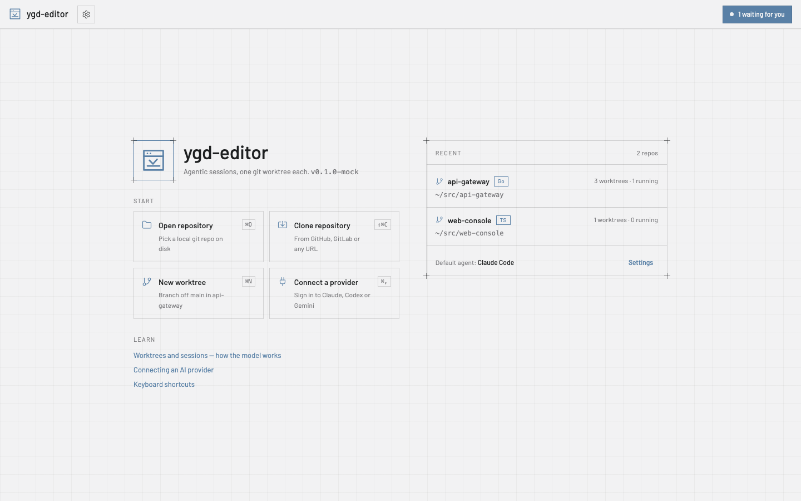
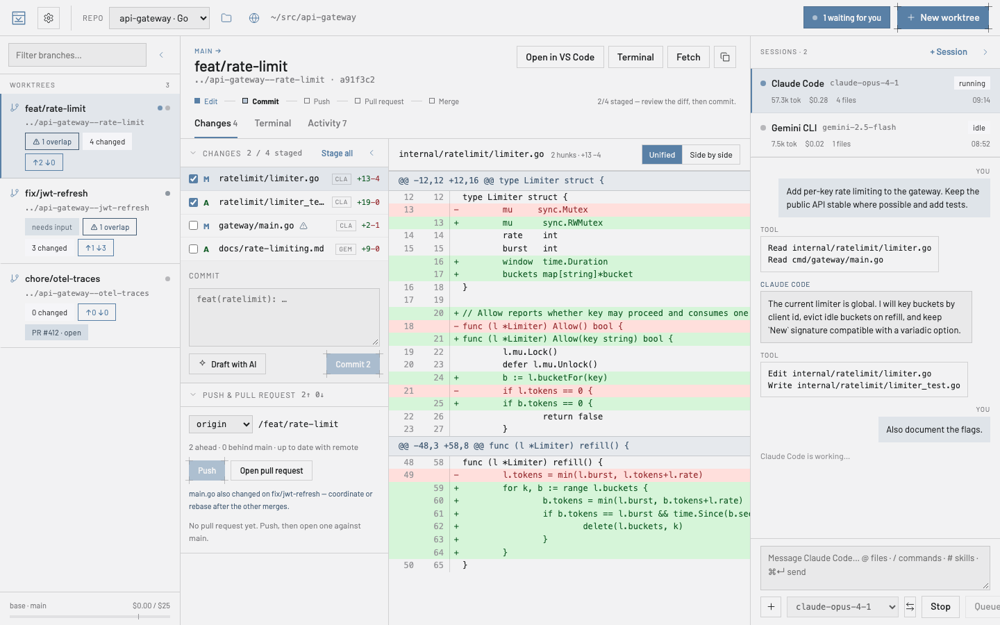
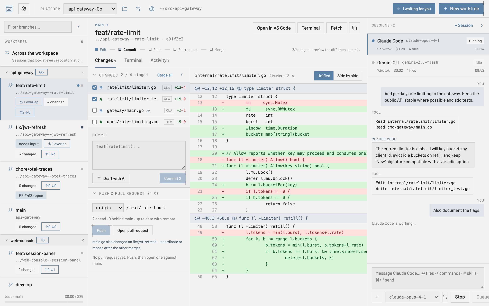
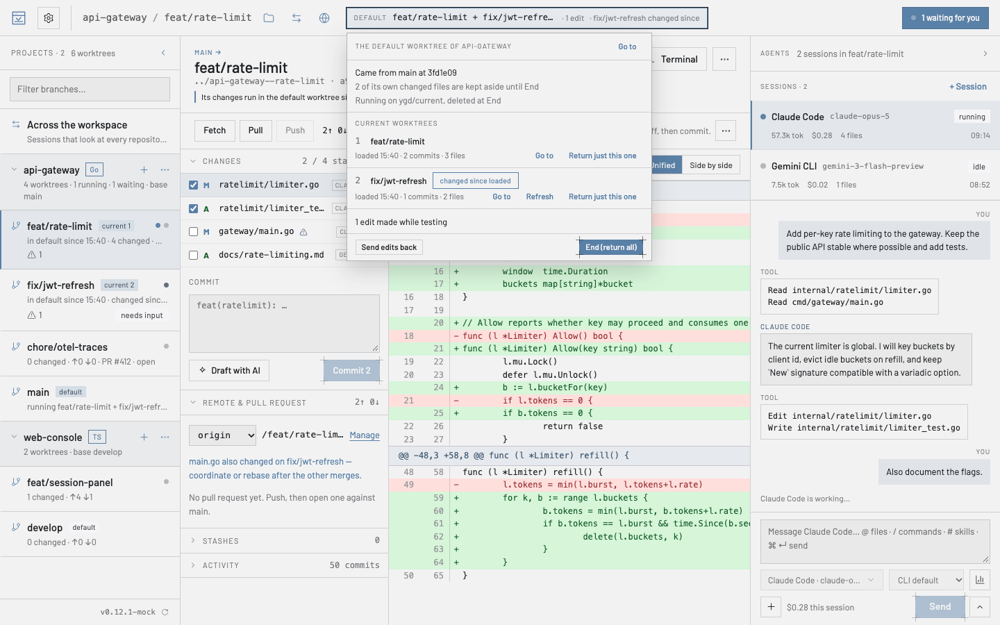
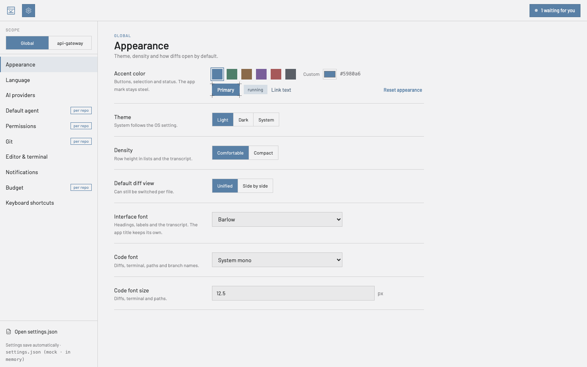

Benutzerhandbuch
Alles, was du für den ersten Nachmittag mit ygd-editor brauchst, in einfachen Worten. Zehn Minuten Lesezeit, und über die Liste kommst du jederzeit zu jedem Abschnitt zurück.
Die Idee in einer Minute
Ein Git-Worktree ist ein zweiter Ordner für dasselbe Repository, ausgecheckt auf einem anderen Branch. Statt in einem Ordner den Branch zu wechseln – und jedes Mal zu stashen, neu zu bauen und den Faden zu verlieren – hast du einen Ordner pro Aufgabe.
ygd-editor ist darum herum gebaut: Das linke Panel listet deine Worktrees, das mittlere zeigt, was sich im ausgewählten geändert hat, und das rechte führt darin einen KI-Agenten aus. Zwei Agenten an zwei Aufgaben arbeiten in zwei Ordnern und kommen sich nie in die Quere. Wenn einer auf eine Antwort wartet, sagt es dir der Posteingang in der Kopfzeile.

Deine ersten zehn Minuten
Nach einer frischen Installation zeigt die Startseite eine Liste Erste Schritte: git, ein KI-Anbieter, ein Repository, ein erster Worktree und eine erste Sitzung. Jeder Schritt hat den Button, der ihn erledigt, und hakt sich selbst ab, sobald er erledigt ist; Diese Liste ausblenden räumt sie für immer weg. Hier dieselben Schritte, ausführlicher.
- Öffne ein Repository. Wähle auf der Startseite Repository öffnen und such einen Ordner aus, in dem schon Git steckt, oder Repository klonen mit einer GitHub-, GitLab- oder beliebigen Git-URL. Zuletzt geöffnete Repositories bleiben auf der Startseite.
- Lege einen Worktree an. Neuer Worktree (⌘N) schlägt aus der Aufgabe einen Branch-Namen und einen Ordner dafür vor; beide kannst du nach deiner eigenen Konvention umbenennen. Git erlaubt keine Leerzeichen in Branch-Namen, also werden sie zu Bindestrichen, und der Dialog zeigt dir das Ergebnis, bevor etwas angelegt wird. Wo Worktrees auf der Platte landen, und ein optionales vorgeschlagenes Präfix, findest du unter Einstellungen › Git.
- Starte eine Sitzung. + Sitzung im rechten Panel wählt einen Agenten und ein Modell; der Standard-Agent steht unter Einstellungen › Standard-Agent. Schreib in den Editor, was du willst.
@hängt Dateien oder Kontext wie den aktuellen Diff an,/führt die Befehle des Agenten aus,#seine Skills. ⌘↵ sendet. - Lass ihn arbeiten – oder stopp ihn. Das Transkript zeigt jedes Werkzeug, das der Agent benutzt. Wenn er eine Erlaubnis für etwas braucht, das du nicht vorab genehmigt hast, wechselt die Sitzung auf wartet, der Posteingang in der Kopfzeile zählt sie, und du erlaubst oder verweigerst – „Immer erlauben“ merkt sich deine Wahl für diesen Worktree. Stopp unterbricht; Prompts, die du währenddessen tippst, kommen in die Warteschlange.
- Prüfe die Änderungen. Der Tab Änderungen listet jede berührte Datei und wer sie geändert hat. Klick auf eine Datei für den Diff; markiere Zeilen und wähle Erklären oder Änderung anfragen, um sie an den Agenten zurückzugeben. Eine Warnung markiert Dateien, die auch ein anderer Worktree desselben Repositorys anfasst.
- Commit, Push, PR öffnen. Hak die Dateien zum Stagen ab, schreib die Nachricht oder Mit KI entwerfen, Commit. Push setzt den Upstream; Pull Request öffnen füllt Titel, Text (auf Wunsch aus dem Diff entworfen), Entwurfsmarkierung, Reviewer und Labels aus und übergibt an
ghoderglab. Die Worktree-Karte zeigt dann den PR und seine Checks.

Im Alltag
Der Haupt-Worktree – der Ordner, in dem du das Repository geöffnet hast – steht bei den anderen in der Liste und ist der, von dem neue Worktrees abzweigen. Wähl ihn aus und klick in der Kopfzeile auf seinen Branch-Namen: Ein Suchfeld klappt über alle Branches auf – deine, oder einen, der nur auf dem Remote existiert und als neuer Tracking-Branch ausgecheckt wird. Tippen grenzt ein, Pfeiltasten und Enter wechseln. Ein Branch, den schon ein anderer Worktree hält, wird aufgeführt, aber ausgegraut, weil Git einen Branch nur in einem Worktree zugleich erlaubt.
Von der Basis aktualisieren auf einem Worktree holt den Basis-Branch und rebased darauf; bei Konflikten stoppt es mit der Liste der Dateien, du löst sie, stagest und Fortsetzen. Fetch aktualisiert die Zähler für voraus/hinterher. Der Tab Terminal ist eine echte Shell im Worktree-Ordner; Aktivität ist die Zeitleiste dessen, was dort passiert ist – Commits, Pushes, Sitzungen – und überlebt Neustarts.
Übergeben. Eine Sitzung kann über ihr Menü in einen anderen Worktree wechseln, Transkript inklusive, wenn du merkst, dass die Arbeit auf einen anderen Branch gehört.
Einen Worktree entfernen beendet seine Sitzungen, archiviert ihre Logs und vergisst seine Berechtigungsregeln; der Branch bleibt, solange du ihn nicht löschst. Einstellungen › Git kann den Worktree von selbst löschen, sobald sein PR gemerged ist.
Mehrere Repositories. Öffne so viele du willst; die Kopfzeile wechselt zwischen ihnen, und der Posteingang zählt wartende Sitzungen über alle hinweg.
Git ohne Terminal
Pull und Von der Basis aktualisieren sind zwei verschiedene Dinge. Pull holt, was auf deinen eigenen Branch gepusht wurde – etwa den Commit eines Kollegen –, damit dein nächster Push durchgeht; haben beide Seiten neue Commits, rebased oder merged es, wie Einstellungen › Git es sagt, oder fragt nach. Von der Basis aktualisieren, im Menü ···, ist die andere Aufgabe: zum Basis-Branch aufschließen.
Konflikte. Hält ein Rebase, Merge, Revert oder Cherry-Pick wegen Konflikten an, öffne die Datei und löse sie Block für Block: behalte eine Seite, die andere oder Beide behalten – oder nimm eine ganze Datei, oder Den Agenten fragen. Die beiden Seiten heißen nach dem, was gerade passiert, sodass du nie raten musst, welche „unsere“ ist. Als gelöst markieren, dann Fortfahren im Banner.
Amend. Das Commit-Feld hat einen Schalter Ändern (amend). Ein Commit, den du noch nicht gepusht hast, wird einfach neu geschrieben. Ein gepushter wird nie per Force-Push überschrieben: Die App legt ihn auf einen neuen Branch, pusht diesen, öffnet einen neuen Pull Request und schließt den alten mit einem Link auf den neuen.
Verlauf. Rechtsklick auf einen Commit in Aktivität: SHA kopieren, Änderungen zeigen, Zurücknehmen oder Cherry-Pick nach… in einen anderen Worktree.
Pull Requests. Die PR-Karte listet jeden Check, das Urteil jedes Reviewers und die Review-Kommentare mit Datei und Zeile. Review umsetzen gibt die offenen Kommentare an den Agenten; Mergen bietet die Methoden an, die das Repository erlaubt, und sagt, warum es noch nicht geht. Ist die Arbeit drin, entfernt Gemergte Worktrees aufräumen… alle fertigen Worktrees auf einmal und nennt die, die es stehen lässt.
Forks. In einem Fork ist origin deine Kopie und upstream das Projekt. Die App liest den Basis-Branch von upstream, sobald es das gibt, sodass ein neuer Worktree von upstream/main startet statt von der veralteten Kopie in deinem Fork, während Pushes und Pull Requests weiter an deinen Fork gehen; Fetch holt von beiden. Einstellungen › Git › Basis-Remote wählt ein anderes, und der Remotes-Dialog markiert es als base.
Bare-Repositories. Ein Repository öffnet sich vollständig aus jedem seiner Ordner: dem Hauptordner, einem verknüpften Worktree, einem bare api.git mit seinen Worktrees daneben oder einer proj/.bare-Struktur. Alle Worktrees werden aufgelistet. Ein Bare-Repository hat keinen Haupt-Worktree, daher lässt sich jeder Worktree entfernen, neue landen neben dem Bare-Ordner (api--fix), und Zum aktuellen machen sowie der Branch-Wechsel des Haupt-Worktrees werden nicht angeboten.
Prüfen, was ein Agent getan hat
Eine Runde nach der anderen. Jede Runde, die Dateien ändert, endet im Verlauf mit einer Zeile darunter – 4 Dateien geändert · +120 −8. Ein Klick darauf, und der Tab Änderungen zeigt nur, was diese Runde getan hat. Diese Runde rückgängig machen … listet zuerst, was mit jeder Datei geschieht, und nimmt dann die Änderungen der Runde heraus: Eine Datei, die seitdem niemand angefasst hat, kehrt in ihren vorherigen Zustand zurück, eine, die du oder eine spätere Runde bearbeitet hat, behält diese Änderungen, und wo beide dieselben Zeilen geändert haben, bleiben Konfliktmarkierungen zum Lösen. Das Rückgängigmachen ist selbst eine Runde und lässt sich ebenfalls zurücknehmen.
Block für Block. Jeder Block eines Diffs hat Stagen und Verwerfen (Unstagen, sobald gestaged); markiere ein paar Zeilen, um nur diese zu stagen oder zu verwerfen. Eine teilweise gestagte Datei hat über ihrem Diff einen Schalter Gestaged / Nicht gestaged.
Ein altes Gespräch wiederfinden. Sitzungen durchsuchen, oben im Sitzungsbereich, sucht in dem, was in diesem Worktree, im Repository oder im Workspace gesagt wurde – und, wenn du archiviert anhakst, in inzwischen entfernten Worktrees. Ein Treffer öffnet die Sitzung an dieser Nachricht. Rechtsklick auf eine Sitzung für Verlauf exportieren …: eine Markdown-Datei mit den Prompts, den Antworten und den Werkzeugaufrufen. Nichts darin wird verborgen, also lies sie, bevor du sie teilst.
Eine lange Änderung lesen. Die Liste der Änderungen gruppiert Dateien nach Ordnern – der Ordner-Button neben dem Filter schaltet auf eine flache Liste um – und der Filter behält die Pfade, die jedes getippte Wort enthalten. Hake Angesehen (V) bei jeder gelesenen Datei an: Der Haken verschwindet von selbst, wenn der Agent diese Datei erneut ändert, und Nächste nicht angesehene (⇧N) bringt dich zur nächsten. Im Diff springen N und P von Block zu Block, und W bricht lange Zeilen um. Geänderte Wörter werden innerhalb der Zeile hervorgehoben, Code ist nach Sprache eingefärbt, nebeneinander wird zu einheitlich, wenn das Panel schmal ist, Bilder erscheinen vorher und nachher, und eine Markdown-Datei lässt sich Gerendert anzeigen.
Versehentlich verworfen? Verwerfen, Alle Änderungen verwerfen, das Verwerfen eines Blocks oder einiger Zeilen und das erzwungene Entfernen eines Worktrees bewahren auf, was sie wegwerfen. Rückgängig in der Einblendung holt es zurück; später hat Stashes › Kürzlich verworfen ein Wiederherstellen, und Als Stash sichern macht aus einem Eintrag einen gewöhnlichen Stash – der Weg zurück zu den Änderungen eines entfernten Worktrees. Auch Alle Änderungen stashen bietet Rückgängig an.
Große Repositories. Bei mehr als 2.000 nicht verfolgten Dateien zeigt die Liste die ersten 2.000 und je Ordner eine Zeile, die den Rest zählt; Alles stagen, Commit und .gitignore erfassen trotzdem jede einzelne. Nicht verfolgte Dateien über 10 MB bleiben aus den Prüfpunkten der Runden heraus, und die Fußzeile der Runde sagt, wie viele. Dauert das Lesen des Worktrees länger als 5 Sekunden, bekommt die Runde keinen Prüfpunkt, und ihre Fußzeile sagt, dass sie sich weder öffnen noch rückgängig machen lässt. Änderungen in node_modules, dist, .next und target aktualisieren die Liste nicht mehr, und Änderungen außerhalb der App erscheinen auch während eines langen Push oder Fetch.
Agenten bei der Arbeit
Den Verlauf lesen. Antworten erscheinen als formatierter Text, und jeder Codeblock hat einen Button Kopieren. Drei oder mehr Werkzeugaufrufe hintereinander falten sich zu einer Zeile zusammen, die sich zum Anzeigen öffnet. Ein Pfad zu einer Datei des Worktrees ist ein Link: Eine geänderte Datei öffnet ihren Diff, jede andere öffnet sich in deinem Editor. Scrolle zum Lesen nach oben, und der Verlauf folgt nicht mehr; Zum Neuesten bringt dich zurück. Wurde eine Sitzung gestoppt, während sie um Erlaubnis bat, steht das im Verlauf.
Lange Sitzungen. Eine Sitzung öffnet sich bei ihren neuesten Nachrichten, und Frühere Nachrichten anzeigen lädt den Rest, wenn du ihn brauchst. Damit der Verlauf nicht endlos wächst, hat Einstellungen › Standard-Agent Sitzungen aufbewahren für (Tage) und Speicherlimit für Sitzungen (MB): Beim Start löscht die App, was älter ist oder über dem Limit liegt. Beides ist aus, bis du es setzt.
Stoppen stoppt wirklich. Stoppen, das Entfernen eines Worktrees und das Beenden der App beenden auch, was der Agent gestartet hat – zum Beispiel einen Dev-Server. Ein Modellwechsel tut das nicht, das Leerlauflimit auch nicht: Einstellungen › Standard-Agent › Untätige Agenten beenden nach (30 Minuten, wenn du nichts änderst; leer heißt nie) beendet einen Agenten, der so lange untätig war, um seinen Speicher freizugeben, und dein nächster Prompt nimmt das Gespräch wieder auf. Ist die App abgestürzt, während noch Agenten liefen, bietet der nächste Start Stoppen oder Weiterlaufen lassen an.
Die Umgebung deiner Shell. Agenten bekommen, was deine .zshrc oder .bashrc exportiert – einen Proxy, API-Schlüssel, AWS_PROFILE –, als hättest du sie aus einem Terminal gestartet, auch wenn die App selbst aus dem Dock oder einem Menü geöffnet wurde. Einstellungen › Editor & Terminal › Umgebung meiner Shell verwenden schaltet das ab und listet die Namen der übernommenen Variablen, nie ihre Werte. Windows braucht das nicht: Dort bekommen Apps deine Variablen schon.
Worktrees, die sofort laufen
Ein neuer Worktree hat keine deiner ignorierten Dateien – keine .env, kein node_modules. Einstellungen › Worktree-Einrichtung löst das einmal für alle: Dateien, die aus dem Haupt-Worktree kopiert werden (etwa .env*), Befehle, die im Terminal des neuen Worktrees laufen (pnpm install), und ein Basisport, damit jeder Worktree seinen eigenen Port in YGD_PORT bekommt und sich zwei Entwicklungsserver nicht mehr um denselben streiten. Das Terminal des Worktrees und seine Agenten bekommen außerdem YGD_WORKTREE und YGD_BRANCH. Der Dialog Neuer Worktree zeigt, was die Einrichtung tun wird; Einrichtung erneut ausführen steht im Menü ···.
Ein Repository kann dasselbe Rezept in .ygd/worktree.json mitbringen. Seine Befehle stammen von dem, der den Branch geschrieben hat; die App zeigt sie deshalb und fragt, bevor sie sie zum ersten Mal ausführt – und erneut, sobald sich die Datei ändert.
Terminals
Mehrere Terminals. + im Tab Terminal öffnet eine weitere Shell neben der des Worktrees; Doppelklick auf einen Tab benennt ihn um. Ausführen ▾ in der Werkzeugleiste startet gespeicherte Befehle – dev: pnpm dev –, jeden in einem Terminal mit seinem Namen, mit Neu starten und Stoppen. @terminal:dev in einem Prompt hängt an, was dieses Terminal ausgegeben hat.
Sie laufen weiter. Ein Terminal behält sein Programm und seinen Verlauf, während die Einstellungen, die Startseite oder der Vergleich offen sind – vim, htop oder ein Dev-Server sind genau so, wie du sie verlassen hast. ⌘F (Strg+Umschalt+F unter Windows und Linux) oder die Lupe am Ende der Tabs durchsucht den Verlauf. ⌘-Klick (Strg+Klick) öffnet einen Link im Browser. ⌘⇧] und ⌘⇧[ (Strg+Bild↓ und Strg+Bild↑) wechseln zum nächsten und vorherigen Terminal. Ein Terminal zu schließen, in dem noch etwas läuft, fragt vorher nach und nennt das Programm.
Probier es auf mehrere Arten
Nicht sicher, welcher Agent oder welches Modell eine Aufgabe am besten erledigt? Hak Auf N Arten versuchen im Dialog Neuer Worktree an und wähl zwei bis vier Versuche – Claude Code, Codex und Gemini CLI, oder dasselbe Modell dreimal. Jeder bekommt seinen eigenen Worktree von derselben Basis (login-a, login-b …), die Einrichtung läuft in jedem, und derselbe erste Prompt geht an alle. Jeder Versuch zählt fürs Budget, und der Dialog sagt das.
Die Versuche stehen in der Seitenleiste beieinander. Klick auf ihren Eintrag, um sie nebeneinander zu vergleichen: Status, geänderte Dateien und Zeilen, Kosten, Runden und Zeit, ein schneller Diff und dein Prüfbefehl – etwa pnpm test aus Einstellungen › Worktree-Einrichtung –, auf Wunsch in jedem ausgeführt. Diesen behalten entfernt die anderen, nachdem es sie aufgelistet hat, kann dem Gewinner den Branch-Namen ohne Endung geben und direkt zu Zum aktuellen machen oder einem Pull Request weitergehen.
Mit mehreren Repositories arbeiten: Arbeitsbereiche
Ein Arbeitsbereich ist eine benannte Gruppe von Ordnern, die die App zusammen offen hält. Ein Gateway, eine Web-Konsole und ein Ordner mit Notizen sind oft ein einziges Stück Arbeit, und eine Frage zu einem davon wird meist in einem anderen beantwortet – mit einem Arbeitsbereich sagst du der App, dass sie zusammengehören.

Einen anlegen. Öffne ein zweites Repository, während schon eines offen ist, und die App fragt, wohin es gehört: dazu zu dem, woran du gerade arbeitest, in einen neuen Arbeitsbereich mit beiden, oder für sich allein. Escape bedeutet „für sich allein“. Du kannst auch von der Startseite aus mit Neuer Arbeitsbereich einen anlegen und später über den Arbeitsbereiche-Button in der Kopfzeile Ordner hinzufügen oder entfernen. Einen Ordner aus einem Arbeitsbereich zu entfernen löscht nie etwas – nur die Gruppe ändert sich.
Aus VS Code. Wenn dein Team schon eine .code-workspace-Datei pflegt, liest Arbeitsbereichsdatei öffnen… sie ein: dieselben Ordner, in derselben Reihenfolge, so benannt wie in VS Code. Kommentare und abschließende Kommas in der Datei sind kein Problem. Ordner, die keine Git-Repositories sind, bleiben erhalten – sie haben nur keine Worktrees – und ein Ordner, der verschwunden ist, wird gemeldet statt stillschweigend weggelassen. In Datei speichern schreibt sie zurück und lässt die Teile, die die App nicht nutzt, unangetastet, sodass dieselbe Datei in beiden Werkzeugen weiter funktioniert.
Was die Seitenleiste zeigt. Worktrees nach Repository gruppiert, jede Gruppe einklappbar, und der Filter passt auf einen Branch- oder einen Repository-Namen, damit du einen Branch findest, ohne dich zu erinnern, wo er liegt. Eine eingeklappte Gruppe zeigt weiterhin, was darin läuft, und sagt weiterhin, wenn eine Sitzung wartet. Bei einem einzigen Repository gibt es gar keine Gruppen.
Was die Agenten sehen. Eine Sitzung läuft weiterhin in ihrem Worktree – dort gehören Git und jeder relative Pfad hin –, aber sie kann auch die anderen Ordner des Arbeitsbereichs lesen, sodass „wo landet dieser Aufruf?“ von beiden Seiten aus beantwortet werden kann. Eine Sitzung, die nur lesen darf, darf weiterhin nur lesen, überall. Über den Gruppen gibt es außerdem eine Zeile, Über den Arbeitsbereich hinweg, für Sitzungen, die zu keinem einzelnen Worktree gehören: Stell denen die Fragen, die den ganzen Stack betreffen. Sie haben keinen Branch, keine Änderungen und kein Terminal, denn die gehören zu einem Worktree.
Einstellungen. Jetzt drei Ebenen: Global, der Arbeitsbereich, dann ein einzelnes Repository. Der Standard-Agent, die Berechtigungsvorgabe und der Basis-Branch sind meist eine Eigenschaft des Stacks und nicht jedes einzelnen Repositorys darin, also setz sie einmal am Arbeitsbereich; ein Repository, das etwas anderes braucht, überschreibt sie trotzdem. Der Bereichswähler in den Einstellungen wählt die Ebene, und ein Abschnitt, der nichts überschreibt, sagt, woher seine Werte kommen.
Die App merkt sich jeden Arbeitsbereich getrennt: Kommst du zu einem zurück, landest du bei dem Repository, dem Worktree und der Panel-Anordnung, in der du ihn verlassen hast.
Einen Worktree im Standard-Worktree testen
Der Ort, eine Änderung auszuprobieren, ist der Ordner des Repositorys selbst — der Standard-Worktree —, denn dort liegen schon node_modules, .env, der Build-Cache und der laufende Dev-Server. Gearbeitet wird in den anderen Worktrees. Zum aktuellen machen holt einen davon in den Standard-Worktree: seine Commits, was er noch nicht committet hat, und seine neuen Dateien, auf dem Branch des Standard-Worktrees. Ab dann sagt die Kopfzeile auf jedem Bildschirm, was der Standard-Worktree ausführt — STANDARD · feat-a + feat-b · 1 Änderung —, und die Seitenleiste markiert den Standard- und die aktuellen Worktrees.

Tauschen setzt einen anderen Worktree an seine Stelle. Hinzufügen legt einen weiteren darüber, um zwei Änderungen zusammen zu testen; wo beide dieselben Zeilen berühren, hält das Laden bei einem Konflikt im Standard-Worktree an, und für jede Datei behältst du die Standard-Seite, übernimmst die ankommende oder bearbeitest sie und markierst sie als gelöst — dann Fortfahren, oder Abbrechen zurück zu dem, was vorher lief.
Korrekturen beim Testen gehen nach Hause. Wenn du — oder ein Agent im Standard-Worktree — beim Ausprobieren etwas korrigierst, gibt Änderungen zurückgeben es dem Worktree zurück, zu dem es gehört, als nicht committete Änderungen zum Prüfen und Committen dort; Rückgängig nimmt es bis zum nächsten Schritt zurück. Nach einer Datei, die zu mehreren aktuellen Worktrees gehört oder zu keinem, wird gefragt statt geraten. Tauschen, Hinzufügen, Neu laden und Beenden geben die Änderungen zuerst zurück, sodass nichts verloren geht, was im Standard-Worktree gemacht wurde. Änderungen zurückgeben, Beenden und Diese Runde rückgängig machen schreiben Dateien so, wie ein Checkout es täte – Git LFS, git-crypt und Windows-Zeilenenden eingeschlossen; fehlt ein Filter, den das Repository braucht (etwa weil git-lfs nicht installiert ist), halten sie mit der Meldung von git an, statt Zeigerdateien zu hinterlassen.
Beenden gibt den Standard-Worktree genau so zurück, wie er war: seinen Branch und seine eigenen Änderungen, gestagt und nicht gestagt. Jeder Schritt öffnet zuerst eine kurze Vorschau: was hereinkommt, was beiseitegelegt wird, welche Dateien in Konflikt gerieten und was ihn gerade verhindert, mit dem Ausweg. Du findest sie im ···-Menü eines Worktrees, per Rechtsklick in der Seitenleiste, im Streifen der Kopfzeile und unter ⌘⇧D / ⌘⇧E.
Einstellungen › Git kann einen aktuellen Worktree selbst neu laden, wenn sein Agent weiterarbeitet, und nach jedem Laden einen Befehl ausführen — etwa pnpm install, wenn sich pnpm-lock.yaml geändert hat — im Terminal des Standard-Worktrees, wo du ihn siehst. Dein git stash wird nie angefasst. Nötig ist git 2.40 oder neuer.
Schnell ans Ziel, und was es gekostet hat
⌘K öffnet die Befehlspalette: jede Aktion der App – mit ihrem Kürzel oder dem Grund, warum sie gerade nicht geht – dazu deine Worktrees aus dem ganzen Workspace, deine Sitzungen, die Seiten der Einstellungen und deine zuletzt geöffneten Repositorys. Beginne mit > für Aktionen, @ für Worktrees, # für Sitzungen; Pfeiltasten und Enter erledigen den Rest.
Was es gekostet hat. Einstellungen › Budget hat einen Nutzungsbericht: ein Balken pro Tag, nach Agent aufgeteilt, und was jedes Repository und jeder Branch ausgegeben hat, für die letzten 7, 30 oder 90 Tage oder einen Zeitraum deiner Wahl, mit CSV exportieren. Die Zahlen sind die des Budgets selbst und stimmen daher immer mit der Ausgabenanzeige überein.
Agenten und Anbieter
ygd-editor spricht selbst mit keinem KI-Dienst. Es führt die Kommandozeilen-Werkzeuge aus, die du schon hast – Claude Code, Codex, Gemini CLI – mit deinen eigenen Konten, sodass Nutzung, Abrechnung und Datenschutzbedingungen genau die sind, die du mit diesen Anbietern vereinbart hast.
Einstellungen › KI-Anbieter verbindet jeden Anbieter mit deinem eigenen Konto: Verbinden öffnet die Anmeldeseite des Anbieters in deinem Browser, und die Karte zeigt danach das Konto, den Plan und Konto wechseln / Trennen / Verbindung testen. Codex und Gemini CLI lädt die App herunter, wenn du sie zum ersten Mal wählst — die Karte nennt Version und Größe, zeigt den Fortschritt, und Download entfernen nimmt ihn wieder weg; hast du eine eigene Kopie installiert, nutzt die App diese. Die Lizenz von Claude Code erlaubt das Mitliefern nicht, deshalb bietet seine Karte Claude Code installieren an, was Anthropics offiziellen Installer im Terminal der Karte ausführt, in deinen Benutzerordner, ohne Administrator-Passwort. Standard-Agent und -Modell sowie die Berechtigungsvorgabe können sich pro Repository unterscheiden.
Die Karte sagt auch, wenn die installierte CLI neuer oder älter ist als die Versionen, mit denen dieses Release geprüft wurde. Sitzungen laufen trotzdem; der Hinweis erklärt nur, warum ein Bericht unvollständig sein könnte. Verliert Codex die Verbindung und versucht es erneut, zeigt der Verlauf einen kurzen Hinweis Verbinde erneut… statt eines Fehlers.
Berechtigungen
Agenten fragen, bevor sie etwas tun, das du nicht vorab genehmigt hast. Einstellungen › Berechtigungen hat drei Vorgaben – streng (nur lesen), ausgewogen (Dateien lesen und bearbeiten, für alles andere fragen) und yolo (auch Befehle ausführen, das Web nutzen und pushen) – plus einzelne Schalter für Lesen, Bearbeiten, Befehle ausführen, Webzugriff, Pushen und Löschen. Egal welche Vorgabe: Ein Agent kann nie ohne Nachfrage löschen, solange du das nicht einschaltest.
Kommt eine Anfrage, antworten Erlauben und Ablehnen einmalig; Immer erlauben merkt sich dieses Werkzeug für diesen Worktree, und die Regel verschwindet mit dem Worktree.
Bittet ein Agent um mehrere Dinge gleichzeitig, reihen sich die Anfragen auf der Sitzungskarte und im Posteingang ein – 1 von 3 – und du beantwortest sie der Reihe nach. Einstellungen › Berechtigungen › Erlaubte Regeln listet jedes „Immer erlauben“ nach Worktree, mit dem Datum, an dem es dazukam; Widerrufen wirkt sofort, auch in einer laufenden Sitzung. Automatisch ablehnen nach (Minuten, standardmäßig aus) lehnt eine Anfrage ab, die niemand beantwortet, und sagt dem Agenten warum. Codex und Gemini CLI können nicht fragen, deshalb zeigt ihre Agentenleiste den Sandbox-Modus, den deine Schalter ihnen geben; ein Klick darauf öffnet Einstellungen › Berechtigungen.
Benachrichtigungen, Posteingang und Budget
Einstellungen › Benachrichtigungen legt fest, wann die App dich anstößt: wenn eine Sitzung wartet, wenn eine fertig ist und wenn sich ein Pull Request ändert – Checks fertig, genehmigt, Änderungen angefordert, gemergt. Pull Requests werden für jeden Worktree im Hintergrund beobachtet, sodass du nach etwa fünf Minuten davon erfährst, auch bei einem Worktree, den du gerade nicht ansiehst; ein so entdeckter Merge behält das Angebot, den Worktree zu entfernen, bis du antwortest. Benachrichtigungen erscheinen nur, während das Fenster nicht im Vordergrund ist, ein Klick darauf springt zur Sitzung, und die Kennzeichnung im Dock oder in der Taskleiste kann wartende Sitzungen zählen.
Der Posteingang in der Kopfzeile hat zwei Tabs. Braucht Eingabe sind die Sitzungen, die auf dich warten. Aktivität ist alles, was dir die App gesagt hat – fertige Runden, Änderungen an Pull Requests, Fehler mit der vollständigen Ausgabe von git, Einblendungen, die du verpasst haben könntest –, und ein Klick auf eine Zeile bringt dich zu ihrer Sitzung oder ihrem Worktree. Ungelesene Zeilen werden gezählt, Alle als gelesen markieren setzt sie zurück, und die neuesten 200 bleiben über Neustarts hinweg erhalten.
Die Budgetleiste unten im linken Panel zeigt die Ausgaben von heute über alle Sitzungen. Meldet ein Agent seine Kosten selbst, gilt diese Zahl; sonst werden seine Tokens zum Listenpreis des Modells berechnet, und die Sätze in Einstellungen › Budget gelten nur für Modelle ohne Listenpreis. Das Nutzungs-Popover und der Tooltip zu den Kosten einer Sitzung sagen, was davon zutrifft. Einstellungen › Budget setzt außerdem ein Tageslimit, ein Limit pro Sitzung und eine Warnschwelle; mit Sitzungen am Limit pausieren stoppt das Erreichen des Tageslimits auch Runden, die noch laufen, und eine Einblendung sagt, wie viele.
Einstellungen
Die Einstellungen (⌘,) sind nach Thema gruppiert. Darstellung setzt Theme, Akzentfarbe, Dichte und Schriften; Sprache schaltet die Oberfläche zwischen Englisch, Spanisch, Italienisch, Polnisch, Französisch, Deutsch und Türkisch um. Mehrere Abschnitte tragen die Markierung pro Repo: Mit einem oben ausgewählten Repository kannst du sie nur für dieses Repository überschreiben. Datum, Uhrzeit, Zahlen und Kosten richten sich nach der gewählten Sprache, nicht nach der des Systems.
Alles wird automatisch in settings.json im Ordner der App in deinem Benutzerverzeichnis gespeichert; settings.json öffnen bearbeitet die Rohdatei mit Validierung, und die Kopfzeile zeigt, wann sie zuletzt geschrieben wurde. Die Datei nennt ihr Schema, sodass ein Editor wie VS Code sie vervollständigt und prüft, wenn du sie von Hand bearbeitest. Jedes Speichern behält die vorherige Datei als settings.json.bak; wird die Datei einmal beschädigt, läuft die App mit dieser Kopie und sagt es dir. Eine ältere Version der App überschreibt nie eine Datei, die eine neuere geschrieben hat: Sie läuft mit den Standardwerten und speichert keine Einstellungen, bis du wieder aktualisierst. Workspaces, Posteingang und Sitzungslisten werden genauso aufbewahrt.
Einstellungen durchsuchen oben findet jede Zeile nach ihrem Namen oder danach, was sie tut: Tippe „Budget Limit“, und Budget öffnet sich mit dem Cursor im Tageslimit; auch ⌘K findet Einstellungen. Eine Zeile, die du geändert hast, zeigt einen Punkt und ihr eigenes Zurücksetzen. Zahlenfelder lehnen einen Wert ab, den die App nicht verwenden könnte, sagen warum und behalten den gespeicherten.

Kleine Fenster und Tastatur
Kleine Fenster. Das Fenster lässt sich bis auf 900 × 680 verkleinern, sodass die App auf einem 13- oder 14-Zoll-Laptop neben einen Editor passt. Unter etwa 1.180 Pixeln Breite klappt der Sitzungsbereich zu einer schmalen Leiste zusammen, unter etwa 1.000 auch die Worktree-Liste. Ein Klick auf die Leiste öffnet ihren Bereich über der Mitte; Escape oder ein Klick daneben räumt ihn wieder weg. Dein gespeichertes Layout bleibt unberührt: Zieh das Fenster breiter, und die Bereiche sind wieder wie vorher.
Mit der Tastatur. Jede Liste – Worktrees, Sitzungen, Terminal-Tabs, Bereiche der Einstellungen, zuletzt geöffnete Repositories – ist ein einziger Tab-Stopp. ↑ und ↓ (← und → bei den Terminal-Tabs), Pos1 und Ende bewegen sich darin, Enter oder Leertaste wählen eine Zeile, die Menütaste oder Umschalt+F10 öffnet ihr Menü, und F2 benennt einen Terminal-Tab um.
Fragen stellt die App selbst. Alles, was ein Ja braucht – Änderungen verwerfen, einen Stash löschen, einen Pull Request mergen –, fragt in einem Dialog der App, in deiner Sprache, mit der Aktion auf dem Button; Escape heißt nein. Klonen, Sitzung übergeben und Remotes fragen, bevor sie wegwerfen, was du darin eingetippt hast.
Updates
Kurz nach dem Start und danach alle sechs Stunden, solange sie offen ist, prüft die App die Releases dieser Seite und sagt dir, wenn es eine neue Version gibt. Ein Klick lädt sie herunter; mit Einstellungen › Über & Updates › Updates automatisch herunterladen wird sie geladen, sobald sie gefunden ist. Installiert wird erst, wenn du wählst: Neu starten und aktualisieren jetzt, Später neu starten – dann wird beim Beenden installiert – oder Verwerfen.
Ein Update wird nur installiert, wenn die signierten Prüfsummen des Releases es aufführen, geprüft gegen das in die App eingebaute Zertifikat. Andernfalls sagt die App, dass das Update nicht vom Projekt signiert ist, und installiert nichts. Einstellungen › Über & Updates hat außerdem Updates anbieten, womit sich die Prüfungen abschalten lassen, und Nach Updates suchen mit der Zeit der letzten Prüfung.
Der erste Start nach einem Update sagt, auf welcher Version du bist, und sein Was ist neu öffnet die Versionshinweise in der App. Auch Einstellungen › Über & Updates und die Befehlspalette öffnen sie.
Tastenkürzel
| ⌘O | Repository öffnen |
| ⇧⌘C | Repository klonen |
| ⌘N | Neuer Worktree |
| ⌘K | Befehlspalette |
| ⌘, | Einstellungen |
| ⌘↵ | Prompt senden |
| ⌘F | Im Terminal suchen |
| ⌘⇧] ⌘⇧[ | Nächstes / vorheriges Terminal |
| ⇧N | Nächste nicht angesehene Datei |
Unter Windows und Linux lies ⌘ als Strg – außer im Terminal: Dort sucht Strg+Umschalt+F, und Strg+Bild↓ / Strg+Bild↑ wechseln das Terminal. Die meisten Kürzel lassen sich unter Einstellungen › Tastenkürzel ändern.
Wenn etwas schiefgeht
macOS sagt, die App konnte nicht überprüft werden (In den Papierkorb legen / Fertig). Klick auf Fertig, dann Systemeinstellungen › Datenschutz & Sicherheit › scrolle zu Sicherheit › Dennoch öffnen, und bestätige mit deinem Passwort. Unter macOS 14 oder älter erledigt Rechtsklick › Öffnen das in einem Schritt. Wenn sie sich weiter weigert, im Terminal: xattr -d com.apple.quarantine /Applications/ygd-editor.app. Sagt sie, die App sei beschädigt, war der Download fehlerhaft: Lade sie erneut herunter und vergleiche sie mit SHA256SUMS.txt.
Die Warnung ganz vermeiden. Installiere im Terminal: curl -fsSL https://mhguitarte.github.io/ygd-editor/install.sh | bash. Es prüft den Download so, wie macOS es getan hätte, und legt die App in „Programme“; mehr auf der Download-Seite.
Windows blockiert den Installer. SmartScreen › Weitere Informationen › Trotzdem ausführen. Als Herausgeber sollte ygd-editor release signing stehen.
Die AppImage startet nicht. Starte sie mit --appimage-extract-and-run oder installiere libfuse2.
Ein Anbieter zeigt „Nicht installiert“. Codex und Gemini CLI werden auf Wunsch heruntergeladen: Klicke auf der Karte auf Herunterladen; schlägt der Download fehl, sagt die Karte warum (offline, oder eine Datei, die nicht zu ihrer Prüfsumme passte und verworfen wurde). Für Claude Code klick auf Claude Code installieren auf seiner Karte; hast du es selbst installiert, öffne ein Terminal, prüfe, dass claude --version funktioniert, und dann Einstellungen › KI-Anbieter › Erneut suchen.
Git-Fehler. Die App erklärt die üblichen in einem Satz – Zugangsdaten, ein Remote, das weitergezogen ist, eine Lock-Datei, ein Arbeitsverzeichnis mit Änderungen, Konflikte – und behält die vollständige Ausgabe im Worktree-Terminal.
Es erscheint kein Update. Prüfe Einstellungen › Über & Updates › Updates anbieten, dann Nach Updates suchen; die App muss github.com erreichen können.
Ein Update wurde als nicht vom Projekt signiert abgelehnt. Es wurde nichts installiert. Lade den Installer unter Alle Versionen herunter und prüfe ihn so, wie Ist mein Download echt? es erklärt.
Einstellungen lassen sich nach der Rückkehr zu einer älteren Version nicht speichern. Die ältere App lässt Dateien, die die neuere geschrieben hat, in Ruhe, läuft mit den Standardwerten und sagt, um welche Datei es geht. Aktualisiere wieder, und alles ist, wo du es gelassen hast.
Ein Problem melden. Einstellungen › Diagnose zeigt, was ein Fehlerbericht braucht: die Versionen der App, von git und jeder Agenten-CLI, den PATH, den die Agenten bekommen, die laufenden Agentenprozesse und ein Live-Protokoll, das du filtern kannst. Protokollstufen legt fest, wie viel protokolliert wird – info, git=debug protokolliert git im Detail. Paket vorbereiten… sammelt alles in einem Zip und listet jede Datei, damit du sie vor Zip speichern… lesen kannst: Tokens und API-Schlüssel sind maskiert, was du Agenten und Terminals geschrieben hast, bleibt draußen, und dein Home-Ordner erscheint als ~. Häng es an ein Issue mit dem, was du getan hast, was du erwartet hast und was passiert ist.
Deinstallieren
Bevor du sie entfernst – beides ist optional. Ist ein Worktree im Standard-Worktree aktuell, klick auf Beenden, damit der Standard-Worktree seinen Branch und seine Änderungen zurückbekommt. Um dich bei einem Anbieter abzumelden, nutze Trennen auf seiner Karte unter Einstellungen › KI-Anbieter: Die Anmeldungen gehören Claude Code, Codex und Gemini CLI, nicht der App, deshalb beendet das Entfernen der App sie nicht. Beende danach ygd-editor.
macOS. Zieh ygd-editor aus dem Ordner „Programme“ in den Papierkorb – aus ~/Applications, wenn die Terminal-Installation sie dort abgelegt hat.
Windows. Einstellungen › Apps › Installierte Apps › ygd-editor › Deinstallieren, oder Systemsteuerung › Programme und Features.
Linux. Lösch die AppImage-Datei. Für das Debian-/Ubuntu-Paket: sudo apt remove ygd-editor.
Was bleibt. Deine Einstellungen, Arbeitsbereiche, der Sitzungsverlauf und die Downloads von Codex und Gemini CLI liegen im Ordner .ygd-editor in deinem Benutzerverzeichnis, und die Deinstallation behält sie: Nach einer Neuinstallation machst du weiter, wo du aufgehört hast. Um sie ebenfalls zu entfernen, samt den Caches der App, führ nach der Deinstallation Folgendes aus:
macOS:
rm -rf ~/.ygd-editor ~/Library/Application\ Support/ygd-editor ~/Library/Caches/ygd-editor-updater ~/Library/Caches/com.mhguitarte.ygd-editor* ~/Library/HTTPStorages/com.mhguitarte.ygd-editor ~/Library/Preferences/com.mhguitarte.ygd-editor.plist
Windows (PowerShell):
Remove-Item -Recurse -Force -ErrorAction SilentlyContinue "$env:USERPROFILE\.ygd-editor", "$env:APPDATA\ygd-editor", "$env:LOCALAPPDATA\ygd-editor-updater"
Linux:
rm -rf ~/.ygd-editor ~/.config/ygd-editor ~/.cache/ygd-editor-updater
Was nie angefasst wird. Deine Repositories und die Worktrees, die du angelegt hast, sind gewöhnliche Git-Ordner und bleiben, wo sie sind; git worktree remove <Ordner> entfernt einen. Hat die App Claude Code für dich installiert, bleibt es in deinem Benutzerverzeichnis – die Dokumentation von Anthropic erklärt, wie du es entfernst.
Datenschutz und Sicherheit
Alles läuft auf deinem Computer. Die App selbst geht für zwei Dinge ins Internet: um die Releases dieser Seite auf Updates zu prüfen und um einmal am Tag die öffentliche Liste der Modelle und ihrer Preise von models.dev zu laden. Agenten sprechen mit ihren Anbietern über deine Konten; Git spricht mit deinen Remotes über deine Zugangsdaten. Anbieter-Tokens, die die App aufbewahrt, liegen im Schlüsselbund des Betriebssystems. Die Oberfläche läuft in einer Sandbox, jede Anfrage, die einen Pfad nennt, wird gegen die Repositories geprüft, die du tatsächlich geöffnet hast, und kein Befehl wird je aus einem Shell-String zusammengesetzt. Das Diagnosepaket wird dort gespeichert, wo du es wählst, und nirgendwohin gesendet.
Um zu prüfen, ob ein Download wirklich von uns ist, sieh dir Ist mein Download echt? auf der Download-Seite an.